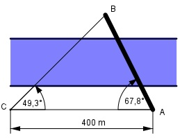

Aufgabe 181 Eine Brücke führt von A nach B über einen Fluss. Von A aus stecken Vermesser eine 400 m lange Standlinie am Ufer nach C ab. Sie messen die Winkel CAB = 67,8° und BCA = 49,3°. Berechnen Sie die Brückenlänge l.

Winkel CBA = 180° - 49,3° - 67,8° = 62,9° Im Dreieck CAB: Fall SWW: Sinussatz: 400 m AB ----------- = ----------- | *sin 49,3° sin 62,9° sin 49,3° 400 m * sin 49,3° AB = ------------------- = sin 62,9° 400 m * 0,7581 = ----------------- = 340,6 m = l 0,8902